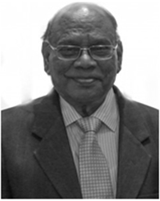

Smt. Paramita Panda
Founder Trustee, Ila Panda Centre for Arts
A gold medalist in Personnel Management and Industrial Relations from Utkal University, an entrepreneur with professional experience of more than 27 years in the field of HR, Public Relations and Commercial matters, Mrs. Paramita Panda is well known for her engagement with the art domain and for her continuing efforts to promote artists and art from Odisha. Deeply rooted in the art and culture traditions of Odisha, Paramita is a devoted art patron, activist, art lover and promoter; and this bond has seen fruition in the establishment of the Ila Panda Centre for Arts (IPCA) of which she is the Founder Trustee.
She is also a director on the Board of IMFA and several other companies. Under her tenure as President, the Bhubaneswar Chapter of National HRD Network (NHRD), reached its pinnacle and was awarded the best emerging Chapter. Besides her corporate responsibilities, she manages and directs the activities of Indian Metals Public Charitable Trust which has been contributing to social and community causes with the Sarala Award for excellence in Odia literature and Ekalabya Award for outstanding Odia sports persons.
Dr. Sitakant Mahapatra, Chairperson
Born on 17 September 1937 Dr. Sitakant Mahapatra is an eminent Indian poet and literary critic in Odia as well as English. He was in the Indian Administrative Service (IAS) since 1961 until retiring in 1995, and has held ex officio posts such as the Chairman of National Book Trust, New Delhi since then. His poetry collections have been published in several Indian languages. His notable works are, Sabdar Akash (1971) (The Sky of Words), Samudra (1977) and Anek Sharat (1981).
He was awarded the 1974 Sahitya Akademi Award in Odia for his poetry collection, Sabdar Akash (The Sky of Words). He was awarded the Jnanpith Award in 1993 "for outstanding contribution to Indian literature" and in its citation the Bharatiya Jnanpith noted, "Deeply steeped in western literature his pen has the rare rapturous fragrance of native soil"; he was also awarded the Padma Bhushan in 2002 and Padma Vibhushan in 2011 for literature apart from winning the Soviet Land Nehru Award, Kabeer Samman and several other prestigious awards. He won the Sahitya Academy Award for his second anthology ‘Asthapadi’ in 1963. His third anthology was the most celebrated one, “Sara Akash” for which he received the Sahitya Akademy Award in 1971. Since then he has published more than 350 poems in Odia, and scores of articles on literary criticism and culture. Mahapatra’s scholarly contributions on the “Little Traditions” of tribal societies testify to his range of interests and erudition.

Dr. J.P. Das
Dr. JP DAS was born in 1933 to Srimati Nilamani Dei and Sri Biswanath Das, and graduated from S.C.B. Medical College, Cuttack in 1956. He his post-graduate studies in Medicine in UK. He worked in London, Edinburgh and Manchester from 1960-62. He was at the C.M.C. Hospital, Vellore from 1966-68 and obtained his Doctorate Degree in Cardiology. He joined S.C.B. Medical College in 1962 and was the first Professor of Cardiology. He worked in that capacity for 17 years before taking voluntary retirement in 1987. Dr. Das has visited U.K., Holland, Denmark, Sweden, Moscow and USA for studies and training. He is a fellow of the American College of Cardiology, Royal College of Physicians of Edinburgh, National Academy of Medical Sciences India, Indian College of Physicians, Indian College of Cardiology and Cardiology Society of India. Dr. Das has exhibited his works in several cities in India. His painting exhibition was held at Kuala Lumpur, Malaysia in 2014. He has to his credit two books on art -THE MUSE OF HEART and THE DIALOGUE: HEART TO HEART and two poetry books in Odia and English along with his sketches. He has been awarded Doctorate in Science, Honoris Causa by the Utkal University. He is at present Director and Consultant at Heart Clinic, Ranihat, Cuttack.
Shri Ramahari Jena
Born in Ganjam in 1957, Shri Ramahari Jena is well known as a distinguished visual artist, a painter, print maker and a photographer. Over the years, he has won many accolades for his creative work, including the National Award - Lalit Kala Akademi 1988 and the State Award - Lalit Kala Akademi in 1988 and 1998, the first Eastern Print Biennale Award, 1996 and the Charles Wallace Visiting Artist Award 1999. He serves on the management board of the Utkal University of Culture and on the executive board of Odisha Lalit Kala Akademi. He has many national and international exhibitions to his credit as well as artist residencies and his works belong in collections like the National Gallery of Modern Art, New Delhi, Lalit Kala Akademi, New Delhi, Bharat Bhavan, Bhopal, Chandigarh Museum, Moore Gallery, London, Lev Tolstoy State Museum, Moscow, and National Art Gallery, Kuala Lumpur and Sutra Gallery, Kuala Lumpur.
Dr. Aurobindo Behera
Dr. Aurobindo Behera, an IAS officer of repute, has served the state of Odisha in various capacities as District Collector, Revenue Divisional Commissioner, and Secretary to Chief Minister, Secretary, Departments of Forest and Environment, ST and SC Development, Rural Development, Public Works Department, Water Resources Department etc. Former Managing Director, Odisha State Disaster Management, Additional CMD, Industrial Development Corporation of Odisha and Member, Board of Revenue. Dr. Behera holds a post graduate degree and Ph.D. in Economics. He is associated with a number of civil society initiatives, especially in areas of Education, Tribal Development, and Sanitation etc.
Shri Devdas Chhotray
Devdas Chhotray, a well-known administrator of the civil services is also an acclaimed Odia author, poet and academician. He was the first Vice Chancellor of Ravenshaw University, Cuttack, Odisha. His work consists of poetry, short stories, lyrics, musicals and screenplays. Chhotray's four decades of poetry and lyrics have been translated into Indian and foreign languages, and he has been published in Bengali (in the Sunil Gangopadhyaya-edited Krittibas.) He has received the Prajatantra Bisuv Milan and Utkal Samaj Centenary (Gangadhar Meher Samman) Awards and the 2008 Rajdhani Book Fair Award 2008 for poetry.
Prof. Jatindra Kumar Nayak
Prof. Jatindra Kumar Nayak is a translator, literary critic, columnist, editor and educationist from Odisha. He has translated several works of Odia literature into English, including Yantrarudha, a novel by Chandrasekhar Rath, as 'Astride the Wheel' which received the Hutch Crossword Book Award 2004 for Indian Language Fiction Translation, and established Nayak's reputation as a notable translator in India. Earlier he won the prestigious Katha Translation Award for his English rendering of Tarun Kanti Mishra's short story as 'The Descent'. Prof. Nayak is a co-translator of Fakir Mohan Senapati's Oriya novel Chha Mana Atha Guntha. He has also translated Atma Jibana Charita, the autobiography of Fakir Mohan, as 'Story of My Life'. His other notable translations into English include the translation of Jagannath Prasad Das's Desha Kala Patra into 'A Time Elsewhere'. Prof. Nayak had his college education in Ravenshaw College, Cuttack and at the University of Oxford. He teaches english literature to post graduate students of Utkal University at Bhubaneshwar.
Smt. Aruna Mohanty
Padmashree Aruna Mohanty is a Odissi dancer, choreographer and guru. She is currently the Secretary of the Orissa Dance Academy.She was trained and nurtured under the able guidance of Padmashree Guru Gangadhar Pradhan. She has received many awards and accolades for her contribution to the arts, including the Mahari Award (1997), Sanjukta Panigrahi Memorial National Award (2001), Fellowship by Ministry of HRD, Government of India, Central Sangeet Natak Akademi Puraskar Award in 2010, State Sangeet Natak Akademi Puraskar Award in 2014 and the Padmashree award(2016-17).
Her choreographed works include Srushti O Pralay depicting the super cyclone that hit Odisha in 1999, Sravana Kumar, Kharavela, Jatra Baramasi, Gatha Odissi, Pratinayak, Krishna Sharanam, several Ashtapadis from Jayadeva's Gita Govinda, and Siddhartha based on the novel of the same name by the German novelist Hermann Hesse. She has used her art to examine contemporary and social issues; for example. in Naari, gender stereotypes and the status of women in society are explored through the lives and stories of several women in Indian literature and history, such as Sita, Draupadi, Mandodari and Nirbhaya. She has conducted research on dance, focusing on topics such as the representation of the male dancer in classical sculpture and the evolution of Odissi in the post-Independence era.
She has been a visiting scholar at several universities in the United States of America, such as the University of California, University of South Carolina and Cornell University.